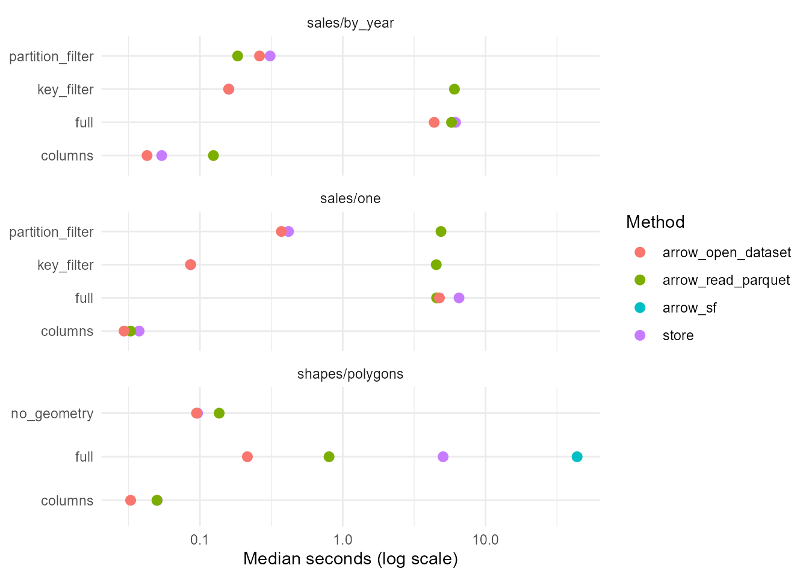

Benchmark: what the package adds on top of Arrow when reading
Source:vignettes/articles/benchmark-read.Rmd
benchmark-read.RmdThis article reads stored results; it does not run the benchmark. The
script is bench/read.R; its code is shown below as it was
run.
Question
store_read() resolves the dataset in the catalog, picks
a location, builds an Arrow dataset from the catalog’s file list, prunes
partitions on the catalog’s partition values, lets Arrow scan, and then
restores the R types Arrow does not restore by itself and turns WKB
geometry into sf. How much time does all this add to Arrow
reading the same files, for full reads, column subsets, key filters and
partition filters?
Setup
env <- read[1, grep("^env_", names(read))]
knitr::kable(data.frame(
item = sub("^env_", "", names(env)),
value = vapply(env, function(v) as.character(v[[1]]), character(1)),
row.names = NULL
))| item | value |
|---|---|
| date | 2026-11-21 09:29:44 |
| commit | f00effc |
| r_version | 4.6.2 |
| os | Windows 10 x64 |
| cpu | Intel64 Family 6 Model 142 Stepping 12, GenuineIntel |
| cores | 8 |
| ram_gb | 31.8 |
| storage | ssd |
| packages | {“rcs”:“0.0.0.9000”,“arrow”:“26.0.1”,“sf”:“1.1.3”,“h3o”:“0.3.0”,“h3jsr”:“1.3.1”,“terra”:“1.9.50”,“duckdb”:“2.0.0”,“bit64”:“4.8.6”} |
1,000,000 rows of rcs_sim_table() (15 columns, among
them integer64, difftime, a list column, factors and two
time zones) written once as one file and once partitioned by year, and
as many rcs_sim_polygons() rows in one file, all in a local
store on SSD. Methods:
-
store:store_read(); -
arrow_read_parquet:arrow::read_parquet()on each file of the catalog’s file list, bound together; a filter is applied in R after reading, except that the partition filter reads only the file of that year when the dataset is partitioned (the path is taken from the catalog); -
arrow_open_dataset:arrow::open_dataset()on the file list, withdplyr::filter()anddplyr::select()pushed down, thencollect(); -
arrow_sf(polygons only):arrow_read_parquetplus turning WKB intosf, the decodingstore_read()also does.
The Arrow methods return Arrow’s own types: integer for
small integer64 values, seconds for difftime,
arrow_list for list columns, WKB for geometry. Each method
is timed with bench_run() (five repetitions after one
untimed run, warm file cache, median reported).
root <- normalizePath(Sys.getenv("RCS_BENCH_ROOT", "."), winslash = "/")
devtools::load_all(root, quiet = TRUE)
source(file.path(root, "bench", "harness.R"))
results_dir <- file.path(root, "bench", "results")
rlang::check_installed(c("h3o", "bench"))
n <- as.numeric(strsplit(Sys.getenv("RCS_BENCH_SIZES", "1e6"), ";")[[1]])[[1]]
work <- file.path(tempdir(), "rcs-bench-read")
unlink(work, recursive = TRUE)
options(rcs.quiet = TRUE)
env <- bench_env(storage = "ssd")
env$commit <- tryCatch(
system2("git", c("-C", root, "rev-parse", "--short", "HEAD"), stdout = TRUE),
error = function(e) NA_character_
)
# One table written twice (one file; partitioned by year) and polygons in
# one file, all sorted by the package (tables by key, polygons by h3).
st <- store_connect(work, create = TRUE)
sales <- rcs_sim_table(n, seed = 1)
key <- c("shop_id", "date", "product")
store_write(st, sales, "sales/one",
title = "Daily sales, one file", description = "Simulated daily sales.", key = key
)
store_write(st, sales, "sales/by_year",
title = "Daily sales by year", description = "Simulated daily sales.", key = key, partition = "year"
)
store_write(st, rcs_sim_polygons(n, seed = 1), "shapes/polygons",
title = "Polygons", description = "Simulated polygons in open ocean."
)
rm(sales)
gc()
# Absolute paths of a dataset's files, from the catalog; `year` of each file
# for the partitioned table.
files_of <- function(dataset) {
rows <- st$primary$files[st$primary$files$dataset == dataset, ]
file.path(work, rows$path)
}
year_file <- function(dataset, year) {
rows <- st$primary$files[st$primary$files$dataset == dataset, ]
keep <- grepl(paste0('"year":', year), rows$partition_values, fixed = TRUE)
file.path(work, rows$path[keep])
}
polygon_crs <- sf::st_crs(st$primary$catalog$crs[st$primary$catalog$dataset == "shapes/polygons"])
# Arrow only: each file read whole and bound, or one dataset over the list.
read_files <- function(paths, ...) {
parts <- lapply(paths, function(p) arrow::read_parquet(p, ...))
if (length(parts) == 1) parts[[1]] else vctrs::vec_rbind(!!!parts)
}
open_files <- function(paths) arrow::open_dataset(paths, format = "parquet")
as_sf <- function(data) {
data$geometry <- sf::st_as_sfc(structure(data$geometry, class = "WKB"), crs = polygon_crs)
sf::st_as_sf(data)
}
# Each operation as the three (or four) methods; same rows, same columns.
operations <- function(dataset) {
paths <- files_of(dataset)
ops <- list(
full = list(
store = quote(store_read(st, dataset)),
arrow_read_parquet = quote(read_files(paths)),
arrow_open_dataset = quote(dplyr::collect(open_files(paths)))
),
columns = list(
store = quote(store_read(st, dataset, columns = c(shop_id, date, qty))),
arrow_read_parquet = quote(read_files(paths, col_select = c("shop_id", "date", "qty"))),
arrow_open_dataset = quote(dplyr::collect(dplyr::select(open_files(paths), shop_id, date, qty)))
),
key_filter = list(
store = quote(store_read(st, dataset, shop_id == 7L, product == "p07")),
arrow_read_parquet = quote(local({
d <- read_files(paths)
d[d$shop_id == 7L & d$product == "p07", ]
})),
arrow_open_dataset = quote(dplyr::collect(dplyr::filter(open_files(paths), shop_id == 7L, product == "p07")))
),
partition_filter = list(
store = quote(store_read(st, dataset, year == 2025L)),
# with the catalog's file list, Arrow alone reads only the file of
# that year when there is one; otherwise it reads all and filters
arrow_read_parquet = quote(local({
one <- year_file(dataset, 2025L)
if (length(one) == 1) {
read_files(one)
} else {
d <- read_files(paths)
d[d$year == 2025L, ]
}
})),
arrow_open_dataset = quote(dplyr::collect(dplyr::filter(open_files(paths), year == 2025L)))
)
)
if (dataset == "shapes/polygons") {
ops <- list(
full = list(
store = quote(store_read(st, dataset)),
arrow_read_parquet = quote(read_files(paths)),
arrow_open_dataset = quote(dplyr::collect(open_files(paths))),
arrow_sf = quote(as_sf(read_files(paths)))
),
no_geometry = list(
store = quote(store_read(st, dataset, geometry = FALSE)),
arrow_read_parquet = quote(read_files(paths, col_select = -geometry)),
arrow_open_dataset = quote(dplyr::collect(dplyr::select(open_files(paths), -geometry)))
),
columns = list(
store = quote(store_read(st, dataset, columns = c(id, area), geometry = FALSE)),
arrow_read_parquet = quote(read_files(paths, col_select = c("id", "area"))),
arrow_open_dataset = quote(dplyr::collect(dplyr::select(open_files(paths), id, area)))
)
)
}
list(paths = paths, ops = ops)
}
timed <- list()
counted <- list()
for (dataset in c("sales/one", "sales/by_year", "shapes/polygons")) {
spec <- operations(dataset)
paths <- spec$paths
for (operation in names(spec$ops)) {
case <- paste(dataset, operation)
cli::cli_inform("Timing {case}.")
methods <- spec$ops[[operation]]
for (method in names(methods)) {
expr <- methods[[method]]
rows <- nrow(eval(expr))
row <- rlang::inject(bench_run(!!method := !!expr, case = case))
row$dataset <- dataset
row$operation <- operation
row$method <- method
row$rows_returned <- rows
row$files <- length(paths)
timed[[paste(case, method)]] <- row
}
counters <- bench_counters(eval(methods$store), case = case, expression = "store")
counters$location <- ifelse(is.na(counters$location), NA_character_, "primary")
counters$detail[counters$counter == "file_open"] <- NA_character_
groups <- vctrs::vec_group_loc(counters[c("case", "expression", "call", "counter", "detail", "location")])
agg <- groups$key
agg$n <- vapply(groups$loc, function(i) sum(counters$n[i]), numeric(1))
counted[[case]] <- agg
}
}
timed <- do.call(rbind, timed)
timed$rows <- n
bench_save(timed, "read", env = env, dir = results_dir)
bench_save(do.call(rbind, counted), "read-counters", env = env, dir = results_dir)
unlink(work, recursive = TRUE)Results
ratio_to <- function(method) {
vapply(seq_len(nrow(read)), function(i) {
ref <- read$median_s[read$case == read$case[[i]] & read$method == method]
if (length(ref) == 1) read$median_s[[i]] / ref else NA_real_
}, numeric(1))
}
read$x_open_dataset <- ratio_to("arrow_open_dataset")
read$x_read_parquet <- ratio_to("arrow_read_parquet")
shown <- read[c("dataset", "operation", "method", "rows_returned", "median_s", "min_s", "x_open_dataset", "x_read_parquet")]
shown[5:8] <- lapply(shown[5:8], signif, 3)
knitr::kable(shown, format.args = list(big.mark = ","))| dataset | operation | method | rows_returned | median_s | min_s | x_open_dataset | x_read_parquet |
|---|---|---|---|---|---|---|---|
| sales/one | full | store | 1,000,000 | 6.5200 | 3.8400 | 1.370 | 1.4400 |
| sales/one | full | arrow_read_parquet | 1,000,000 | 4.5400 | 3.4900 | 0.956 | 1.0000 |
| sales/one | full | arrow_open_dataset | 1,000,000 | 4.7500 | 3.1400 | 1.000 | 1.0500 |
| sales/one | columns | store | 1,000,000 | 0.0375 | 0.0373 | 1.270 | 1.1500 |
| sales/one | columns | arrow_read_parquet | 1,000,000 | 0.0327 | 0.0299 | 1.110 | 1.0000 |
| sales/one | columns | arrow_open_dataset | 1,000,000 | 0.0295 | 0.0284 | 1.000 | 0.9010 |
| sales/one | key_filter | store | 2,626 | 0.0862 | 0.0795 | 1.000 | 0.0191 |
| sales/one | key_filter | arrow_read_parquet | 2,626 | 4.5200 | 3.4400 | 52.600 | 1.0000 |
| sales/one | key_filter | arrow_open_dataset | 2,626 | 0.0859 | 0.0818 | 1.000 | 0.0190 |
| sales/one | partition_filter | store | 69,340 | 0.4170 | 0.3530 | 1.120 | 0.0856 |
| sales/one | partition_filter | arrow_read_parquet | 69,340 | 4.8700 | 3.5900 | 13.100 | 1.0000 |
| sales/one | partition_filter | arrow_open_dataset | 69,340 | 0.3720 | 0.3190 | 1.000 | 0.0763 |
| sales/by_year | full | store | 1,000,000 | 6.1600 | 3.9400 | 1.410 | 1.0700 |
| sales/by_year | full | arrow_read_parquet | 1,000,000 | 5.7800 | 3.7800 | 1.320 | 1.0000 |
| sales/by_year | full | arrow_open_dataset | 1,000,000 | 4.3700 | 3.2600 | 1.000 | 0.7560 |
| sales/by_year | columns | store | 1,000,000 | 0.0541 | 0.0519 | 1.270 | 0.4350 |
| sales/by_year | columns | arrow_read_parquet | 1,000,000 | 0.1240 | 0.1240 | 2.920 | 1.0000 |
| sales/by_year | columns | arrow_open_dataset | 1,000,000 | 0.0427 | 0.0419 | 1.000 | 0.3430 |
| sales/by_year | key_filter | store | 2,626 | 0.1600 | 0.1380 | 1.000 | 0.0264 |
| sales/by_year | key_filter | arrow_read_parquet | 2,626 | 6.0500 | 5.0000 | 38.100 | 1.0000 |
| sales/by_year | key_filter | arrow_open_dataset | 2,626 | 0.1590 | 0.1490 | 1.000 | 0.0263 |
| sales/by_year | partition_filter | store | 69,340 | 0.3100 | 0.2810 | 1.190 | 1.6900 |
| sales/by_year | partition_filter | arrow_read_parquet | 69,340 | 0.1840 | 0.1740 | 0.703 | 1.0000 |
| sales/by_year | partition_filter | arrow_open_dataset | 69,340 | 0.2610 | 0.2200 | 1.000 | 1.4200 |
| shapes/polygons | full | store | 1,000,000 | 5.0400 | 4.1900 | 23.500 | 6.2900 |
| shapes/polygons | full | arrow_read_parquet | 1,000,000 | 0.8020 | 0.4740 | 3.730 | 1.0000 |
| shapes/polygons | full | arrow_open_dataset | 1,000,000 | 0.2150 | 0.1700 | 1.000 | 0.2680 |
| shapes/polygons | full | arrow_sf | 1,000,000 | 43.7000 | 41.8000 | 203.000 | 54.5000 |
| shapes/polygons | no_geometry | store | 1,000,000 | 0.0964 | 0.0864 | 1.020 | 0.7060 |
| shapes/polygons | no_geometry | arrow_read_parquet | 1,000,000 | 0.1360 | 0.1340 | 1.440 | 1.0000 |
| shapes/polygons | no_geometry | arrow_open_dataset | 1,000,000 | 0.0948 | 0.0855 | 1.000 | 0.6940 |
| shapes/polygons | columns | store | 1,000,000 | 0.0503 | 0.0475 | 1.540 | 1.0100 |
| shapes/polygons | columns | arrow_read_parquet | 1,000,000 | 0.0500 | 0.0481 | 1.530 | 1.0000 |
| shapes/polygons | columns | arrow_open_dataset | 1,000,000 | 0.0327 | 0.0311 | 1.000 | 0.6540 |
x_open_dataset and x_read_parquet are the
median time divided by that of the Arrow method on the same
operation.
library(ggplot2)
ggplot(read, aes(x = median_s, y = operation, colour = method)) +
geom_point(size = 2.5) +
facet_wrap(~dataset, ncol = 1, scales = "free_y") +
scale_x_log10() +
labs(x = "Median seconds (log scale)", y = NULL, colour = "Method") +
theme_minimal()
Work counters of store_read() (files opened and row
groups in them):
shown <- counters[counters$counter %in% c("file_open", "row_groups_total", "rows_returned"), ]
shown <- stats::aggregate(n ~ case + counter, data = shown, FUN = sum)
wide <- stats::reshape(shown, idvar = "case", timevar = "counter", direction = "wide")
names(wide) <- sub("^n\\.", "", names(wide))
knitr::kable(wide, row.names = FALSE, format.args = list(big.mark = ","))| case | file_open | row_groups_total | rows_returned |
|---|---|---|---|
| sales/by_year columns | 15 | 29 | 1,000,000 |
| sales/by_year full | 15 | 29 | 1,000,000 |
| sales/by_year key_filter | 15 | 29 | 2,626 |
| sales/by_year partition_filter | 1 | 2 | 69,340 |
| sales/one columns | 1 | 20 | 1,000,000 |
| sales/one full | 1 | 20 | 1,000,000 |
| sales/one key_filter | 1 | 20 | 2,626 |
| sales/one partition_filter | 1 | 20 | 69,340 |
| shapes/polygons columns | 1 | 20 | 1,000,000 |
| shapes/polygons full | 1 | 20 | 1,000,000 |
| shapes/polygons no_geometry | 1 | 20 | 1,000,000 |
Verdict
- Tables: a full read through
store_read()takes 1.4 times as long asopen_dataset()on the same file (1.4 times for the partitioned copy). The difference is the restoring of the R types Arrow does not restore by itself:integer64, difftime in its units, and the list column, which is now rebuilt without a dispatch per element. Arrow alone returns the column asarrow_list,integer64asintegerand difftime in seconds. - A column subset costs about what Arrow costs (1.3 times), and so does the key filter (1 times; Arrow skips row groups by their statistics because the file is sorted by the key).
- The partition filter on the partitioned copy opens only the file of
that year: the partitions are pruned on the catalog’s partition values
before any file is opened. It takes 1.2 times as long as
open_dataset()and 1.7 times as long asread_parquet()on that one file: the 69,340 rows returned carry the list column and the other restored types, and the schema is read from one file’s footer before pruning. - Polygons: with geometry,
store_read()takes 23 times as long asopen_dataset(), which returns WKB, and 0.12 times as long as Arrow plus the decoding withsf::st_as_sfc()(arrow_sf): the package decodes WKB with wk, which builds the samesfc, bounding boxes included, many times faster thansf. The decoding is still most of the time of a full read with geometry. - Without geometry, a polygon read costs what Arrow costs.
Limits
- One machine and its SSD, warm file cache; the machine was quiet.
- The Arrow methods do not return the same R types as
store_read(); they show the floor that Arrow sets, not an equivalent result. - Reads from a cloud bucket are in
benchmark-cloud.Rmd; spatial queries inbenchmark-spatial.Rmd.